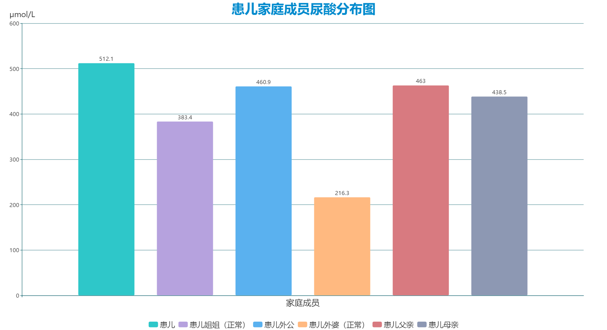
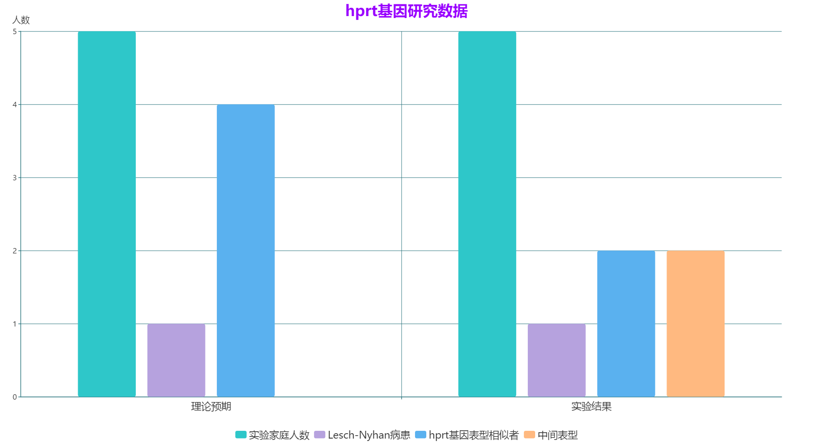

国内外对LNS的病例报道与分析的数据少之又少，仅仅几所顶尖高校的医学院有这类报告，为了使读者更直观地了解这种罕见病，我们提取国内外各一个典型案例进行分析。
患有Lesch-Nyhan综合征的人尿酸水平异常高，尿酸钠晶体可能在关节和肾脏中异常积累。Lesch-Nyhan综合征是一种X连锁隐性遗传病，除罕见的女性外，最常影响男性。莱施-尼汉综合征的症状可能早在六个月时就会显现出来。尿酸晶体的早期形成，由于尿液中尿酸含量的异常增加，导致患有这种疾病的婴儿尿布中出现橙色沉积物(“橙色沙子”)。这可能是莱施-尼汉综合征的第一种表现，但在婴儿早期就很少被发现。尿酸结石可能发展为婴儿莱施-尼汉综合征，由于过多的尿酸，排泄为尿酸钠。这些结石可能导致血液出现在尿液(血尿)，增加泌尿道感染的风险。尿酸晶体也可以在关节中发现，但一般来说，直到十几岁晚期或成年以后，没有治疗的莱施-尼汉综合征患者才会经历关节反复疼痛和肿胀的发作，就像那些患有痛风的成年人一样。一旦开始，这些事件可能会变得越来越频繁。
由此可见家庭成员的尿酸对此病起重要作用，且女性只为载体，俗称“传男不传女”。
由此可得，HPRT基因对LNS的病发起决定性作用，婚检与孕检应重视这项指标